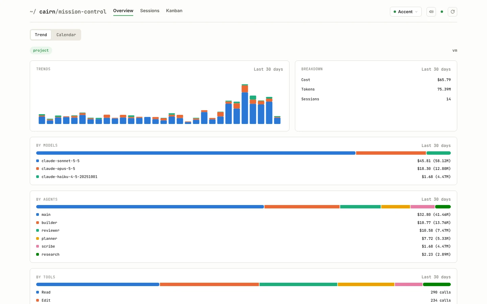

A Claude Code workflow you install like a dependency, and read like one too.
Lean, on-demand and non-invasive. cairn leaves one line behind, reads everything else only when asked, does nothing until your project has told it how things work, and comes out without a trace.
/plugin install cairn@cairn-marketplace
the only change cairn makes to your CLAUDE.md
Two paths, cheap by default
Most changes run a fixed, two-hop chain. Nothing is provisioned (no task folder, no plan, no spec) unless the change actually needs one.
Default
≤ 40k tokens
No task folder, no plan, no spec.
Escalated (opt-in)
≤ 150k tokens
With docs/tasks/<slug>/STATE.md for resume.
When to escalate: the change spans more than one submodule, alters a published contract (API, schema, or event), or you can't describe it in two sentences. Escalating is a deliberate choice for those cases, not a fallback for uncertainty.
Every artifact loads on one of four terms
Tracked in docs/BUDGET.md and measured, not estimated.
Always loaded
every turn
Only the ≤ 400 B marker block in your CLAUDE.md, plus each agent/skill/command's description. Nothing else, ever.
On demand
once, in one context
Agent bodies, SKILL.md, reference/*.md, .harness/*.md, loaded by an explicit read at a named step.
Executed
~0 tokens
Scripts, run via Bash, returning compact JSON. The model reads the output, never the source.
Never loaded
0
docs/REGISTRY.md, docs/BUDGET.md, tests, CI config: read by tooling and humans only.
What cairn writes in your project
Everything else is out of bounds, including paths that would otherwise be convenient.
+ writes
- +CLAUDE.mdone marker block, on confirmation
- +.harness/*.mddrafted by cairn, owned by your team
- +.harness/local/this developer's, never committed
- +docs/tasks/<slug>/escalated path only
- +.cairn/runtime state, self-ignoring
- +the files you asked to changethat's the job
− never writes
- −.claude/settings*.json
- −.claude/agents/, skills/, commands/, hooks/
- −your project's own .gitignore
- −CI config, manifests, lockfiles
- −git hooks, .git/ internals
- −anything outside the repo root
Run /cairn-teardown any time: it removes the marker block and .cairn/, and shows exactly what's left behind and why.
Three postures, one chain
Not three different chains: the same builder → reviewer chain, run three ways.
interactive
Normal chat session.
# cairn asks when it needs to
attended
Tool calls auto-accepted.
# a human is still there to answer
unattended
Dispatched, then left alone.
# escalated path only
When unattended, cairn makes and flags its own assumptions instead of asking, and stops at one of three outcomes (done, needs-human, stalled) written into STATE.md. It never publishes on its own: it stops once reviewer passes and leaves merging or opening a PR to you.
Cheap by default, not cheap by claim
cairn 2.0 is a rewrite of its own predecessor, measured directly from both repos.
| Metric | Before | After |
|---|---|---|
| Agents | 18 (278 KB) | 5 (10.2 KB) |
| Skills | 10 (87 KB) | 12 (27.9 KB) |
| Baseline tokens before you type | ~9,000 | ~800 |
| Tokens per feature | 200,000–400,000 | ≤ 40,000 / ≤ 150,000 |
Measured against two other agent frameworks evaluated during this redesign, kept unnamed since they're private projects and cited only for their numbers. One carried a ~52k-token baseline before any work began and 0.7–1.5M+ tokens for a single medium feature, driven by a large always-loaded registry and 10+ agent hops per task. The other proved a ~1–2k token baseline is possible with almost no framework at all, at the cost of near-zero enforcement. cairn 2.0's target came from holding both extremes against each other: a small, disclosed baseline and a bounded cost per feature.
See what your own sessions cost
Don't take cairn's numbers on faith either. Run /cairn-mc to start a local dashboard, scoped to your own machine, showing exactly what your sessions cost: tokens and dollars, per agent, per model, per skill, per call.

The real dashboard UI, running against illustrative demo data (not a real session's numbers). It's local-only: no accounts, no cloud sync, nothing leaves your machine.